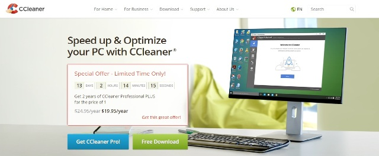
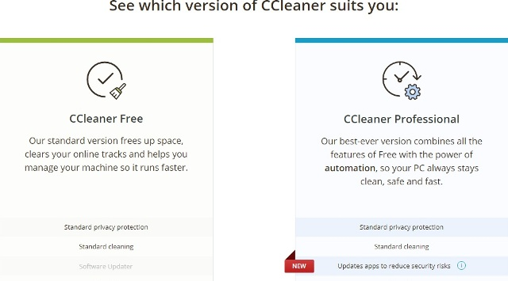
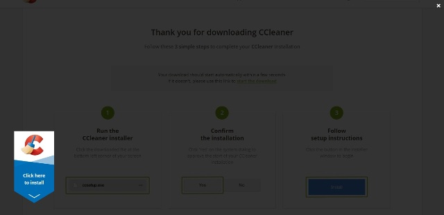
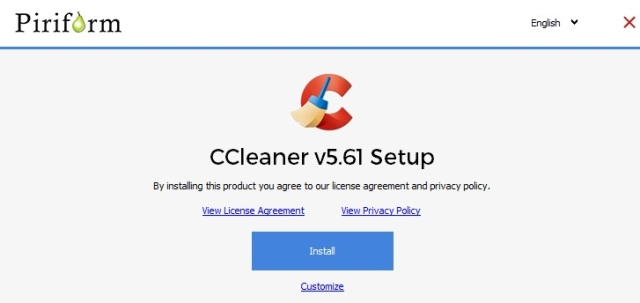

CCleaner(Crap Cleaner) is a disk cleaner, developed by Piriform in 2004. It is one of the longest-established system cleaners. It was originally developed for Microsoft Windows only, but in 2012, a macOS version was released. Piriform also released CCleaner for Android in 2014 and in July 2017, CCleaner was acquired by Avast.
CCleaner works with 32-bit and 64-bit versions of Windows 10, Windows 8 (including Windows 8.1 & Windows 8.1 Update), Windows 7, Windows Vista, and Windows XP and it is available in 55 languages and has hit more than 2.5 billons downloads, with 5 million installs on desktops every week.
How to Download and Install CCleaner?
CCleaner is available to download from the official site of Piriform or from the link =>
CCleaner
Steps to download and install CCleaner:
As it is shown in the picture, you have two options to choose from: get CCleaner Pro (has to pay for this) or Free download.

Img 1. CCleaner Homepage
I will choose the free version. After clicking on Free Download tab, a screen showing the message " See which version of CCleaner suits you: "
will be displayed.

Img 2. Select your product
Click on download and following screen will be shown.

Img 3. Downloading Page
Downloading will start by clicking on blue arrow or from the link given on the screen.
After download, new screen will appear and prompt you to install the application. Click on Install and the application will start installing on your PC.

Img 4. Prompting for Installation
The installation will take few seconds and you can run it to delete junk files from your computer.
Usually, this software is used to delete unwanted files from the computer that take up unnecessary space of RAM.
CCleaner has many options available for you to choose from:
Easy clean or Custom Clean: CCleaner will analyze whole or few files of your computer(depends upon whether you have choosen Easy or Custom clean) and make a list of trackers and junk files and you can see from where it has collected junk files and delete them.
CCleaner works as a registry cleaner tool as it will remove registry keys and registry values and registry entries that point to the following if they no longer exist: DLL files, file extensions, COM/ActiveX objects, type libraries, applications and application paths, fonts, help files, installers, sound events, and services.
It also removes temporary browser data like cookies, history, and the cache from all popular browsers. You can also do things like empty the Recycle Bin, clear MRU lists, empty the thumbnail cache in Windows, remove old memory dumps and log files, and much more.
CCleaner also has a "Tools" area where you can automatically uninstall programs, view and change the programs that startup with Windows, find and remove files that are taking up lots of disk space, find duplicate files, remove restore points, and even wipe a drive.
Pros and Cons
Cons
Latest versions of Windows have all its functions built-in, no need of CCleaner
Newer version may installs Avast without asking user
Sends reports of registries to CCleaner server without knowledge of user
Here are few pros and cons of CCleaner:
Pros
Faster and easy to use
Removes corrupted registry files and unwanted cache and cookies
Backup file is created before any changes to the registry are made
Supports Windows, macOS, Andriod
Boosts up the system speed
Alternatives
Windows 10 has built-in Disk Clean up tool which removes temporary files, previous Windows installations, log files, old Windows updates, thumbnails, and various other cache files.
Moreover, new versions of browsers like Chrome allows user to access how much cache is being used by which page and helps to manage the cookies.